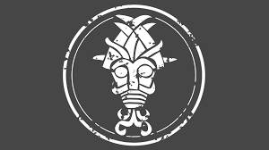
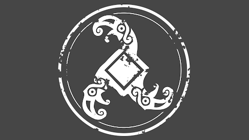
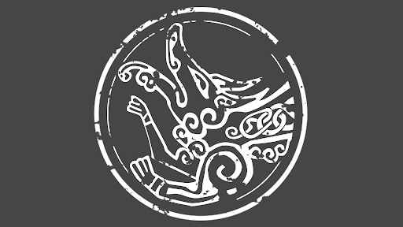
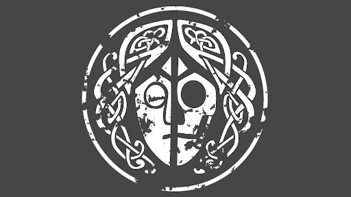

Surt
{kind=link}

Surtr é um gigante de fogo do mundo nórdico de Muspelhein e guardião da Marca de Surtr. Uma besta imponente que empunha uma espada envolta em chamas, vem de uma terra mais antiga que a humanidade, tem uma forma humanoide coberta de sangue e chamas.
Valravn
{kind=link}

Valravn é o deus da ilusão e guardião da Marca de Valravn. Um híbrido monstruoso entre homem e corvo, sua cabeça é formada pelo crânio de um corvo, com penas negras que se estendem dele até os ombros, formando um capuz.
Garm
{kind=link}

Garm é descrito como um guardião monstruoso em Helheim, aparece como uma forma híbrida entre cão e javali, com partes da carne em decomposição. Sua cabeça e mandíbulas são esqueléticas de um lado, e sua pele, de cor pálida, está coberta de feridas e putrefação.
Hela
{kind=link}

Hela é uma deusa nórdica que reina sobre o reino de Helheim , o submundo nórdico. Um ser que detém poder sobre as almas daqueles que morreram de doença, idade, dificuldades e suicídio, ela é a única capaz de ressuscitar os mortos.